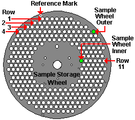

This procedure describes how to align the dual-gantry sample pipettor that contains a pick-and-place and a sample pipettor that share a gantry on an integrated platform. The sample pipettor must align to the wash tower, sample wheel inner and outer positions, and the SPU. The pick-and-place must align to the sample wheel inner and outer positions, the SPU, and the UCTA transfer shuttle.
Required Materials:
Green, vessel-shaped alignment tool
Sample pipettor to SPU adjustment and alignment tool
UCTA pick-and-place alignment tool (This tool is supplied by Brea and must be used to complete the UCTA pick-and-place to UCTA transfer shuttle alignment. This alignment is done as part of the dual-gantry sample pipettor to UCTA transfer shuttle alignment. The tool is not used on the dual-gantry sample pipettor.)
Pre-requisites:
All mechanical adjustments for the following devices must be completed before performing the software alignments in this procedure
The dual-gantry sample pipettor contains a pick-and-place and sample pipettor which share a gantry on an integrated platform.
The sample pipettor interacts with the SPU, sample storage module, and the wash tower. The sample pipettor must:
aspirate from containers presented by the SPU.
dispense into a sample vessel in the sample storage wheel.
be cleaned in the wash tower.
The pick-and-place interacts with the AV transfer shuttle, sample storage module, and SPU. The pick-and-place must:
transfer empty sample vessels from the sample storage module to the UCTA transfer shuttle.
transfer sample vessels (aliquotted by the UCTA) from the UCTA transfer shuttle to the sample storage module.
transfer a sample vessel from position four of a special low-volume sample rack to the sample storage module.
The alignments for this module include:
Align sample pipettor to wash tower position
Align sample pipettor to sample storage module wheel inner position
Align sample pipettor to sample storage module wheel outer position
Align sample pipettor to SPU position
Align dual-gantry pick-and-place sample storage module wheel inner position
Align dual-gantry pick-and-place sample storage module wheel outer position
Align dual-gantry pick-and-place SPU position
Align dual-gantry pick-and-place UCTA transfer shuttle position
Note:
Aligning the Sample Pipettor: The dual-gantry sample pipettor alignment procedure is identical to the alignment procedure for the standard sample pipettor.
Aligning the Pick-and-Place: Newer sample wheels have the inner and outer alignment positions marked by three white dots. Older wheels do not have these positions marked.
Figure 263: Dual-gantry alignment positions on old sample wheels

Note: Changes to alignment offsets are written to file:
when the alignments are saved while exiting the
Alignment screen.
by selecting
Alignments / Offsets > Save Alignments.
Determine if the manufacturing alignments must be changed.
If this instrument came from manufacturing without a sample pipettor installed, and the dual-gantry sample pipettor was shipped in the crate with the DxI instrument, then change the manufacturing alignments.
Note: These instruments were tested and aligned in manufacturing with the dual-gantry sample pipettor and the saved offsets are close to the final alignment positions. It is not necessary to turn off the manufacturing alignments.
If this instrument came from manufacturing without a dual-gantry sample pipettor shipped with the DxI instrument, and thisalignment is the first alignment for the dual-gantry sample pipettor, then change the manufacturing alignments to 'Not Done'.
Caution: Change the manufacturing alignments only if this alignment is the first alignment of the dual-gantry sample pipettor after the initial install. Manufacturing alignments are turned off so that the offsets, which might be out of range, can be saved. Offsets might be out of range because the dual-gantry sample pipettor and the standard sample pipettor are different heights.
If needed, change the manufacturing alignments to Not Done.
For Windows XP:
Select
Programs > Administrative Tools
> Remote Desktop Connection to AU PC.
Locate the
AuObj.exe icon (small y-shaped icon) on the bottom right of the
Windows desktop.
Right-click
AuObj.exe, and select
Exit.
On the desktop, open Windows Explorer. Select
AU_PC(C:) >> AU, right-click on the specific.ini file, and then select
Copy.
Right-click
AU_PC(C:), and then select
Paste.
Note: A copy of the specific.ini file is placed on
AU_PC(C:).
Double-click to open the specific.ini file in the
AU_PC(C:) >> AU folder.
Select
Search
> Find, and enter
mfgalignment in the search box. Select
Find Next.
Change
Yes to
No
, and then save the changes by selecting
File > Save.
Close the specific.ini file and the
Explorer window.
Double-click the
AUObj.exe icon on the desktop to restart the AU program.
Close the remote desktop connection to the instrument.
Note: The user interface should now say
Manufacturing Not Aligned under the
Main Menu or in the
Diagnostics
screen.
For Windows 8:
Open a remote desktop connection to the AU.
Press the
Windows key, type
remote, and open the Remote Desktop Connection program.
Type
192.168.2.4 into the Computer field and select
Connect.
Enter
user for the User Name and
tech for the password if prompted.
If prompted at the RDS warning screen, check the box for “Don’t ask me again for connections to this computer” and select
Yes.
Note: For Windows 8, the default console IP address is 192.168.2.3 and the AU IP address is 192.168.2.4. Neither IP address changes during the software load process.
Shut down the AU Object program.
Right click on the task bar and select
Task Manager.
In the
Task Manager box, click on
Processes, select
AUobj Module, and click on
End Task in the bottom corner of the box.
In the AU desktop, find specific.ini file and make a copy of the file.
Double click on
Computer or File Explore and select
Local C: drive
or
AU_PC (C:)> AU > specific.ini, right-click on the specific.ini file, and then select
Copy.
Right-click
Local C: Drive or AU_PC(C:), and then select
Paste. A copy of the specific.ini file is placed on
AU_PC(C:).
Double-click to open the specific.ini file in the Local C: Drive or
AU_PC(C:) >> AU folder.
Select
Search
> Find, and enter
mfgalignment in the search box. Select
Find Next.
Change
Yes to
No
, and then save the changes by selecting
File > Save.
Close the specific.ini file and the
Explorer window.
Double-click the
AUObj.exe icon on the desktop to restart the AU program.
Close the remote desktop connection to the instrument.
Note: The user interface should now say
Manufacturing Not Aligned under the
Main Menu or in the
Diagnostics
screen.
Remove both the upper rear and sample storage covers.
From the
Main Menu, select
Diagnostics > Device Diagnostics > Mechanics > Alignments.
Align dual-gantry pick-and-place to sample wheel inner x/y-position.
Place the green, vessel-shaped alignment tool into the wheel inner position.
Select
Dual Gantry P&P as the device, then select
Sample Wheel Dual Gantry Inner
as the position.
Select
Home Device > Move X/Y to Position > Motors
> Disable Z motor.
Manually roll the z-pulley to lower the pick-and-place.
Verify that the vessel-shaped tool did not move as the pick-and-place was lowered onto the tool.
If the vessel-shaped tool does not move,
Enable the motors.
Place the alignment tool in the wheel inner position
Proceed to the next alignment.
If the vessel-shaped tool does move,
Estimate the how many steps to move the alignment.
Place the alignment tool in the wheel inner position.
Enable the motors.
Continue with this alignment.
Select
Home Device
> Move X/Y to Position.
Using the directional keys, step the pick-and-place x/y-position or the wheel left and right position the number of steps estimated in the previous step.
One helpful alignment technique is the average alignment value method.
Note: Refer to the Troubleshooting - Pick and Place Alignments procedure.
Select
Alignments / Offsets > Preserve Offsets.
Repeat the alignment to verify the alignment change.
Align dual-gantry pick-and-place to sample wheel inner z-position.
Select
Home Device > Move Z to Position > Motors > Disable Z Motor.
Manually roll the z-pulley to raise the pick-and-place tool to eye-level.
Verify that the pick-and-place collet fingers are level with the top of the green ring on the tool.
If the collet fingers are level with the top of the green ring on the tool,
Remove the alignment tool.
Enable the motors.
Proceed to next alignment.
If the collet fingers are not level with the top of the green ring on the tool,
Estimate the how many steps to move the alignment.
Place the alignment tool in the wheel inner position.
Enable the motors.
Continue with this alignment.
Select
Home Device
> Move Z to Position.
Using the directional keys, step the pick-and-place z-position the number of steps estimated previously.
Note: The tool might move up in the z-direction as the pick-and-place is moved up. After moving the pick-and-place, verify that the tool is seated completely in the secondary device.
Select
Alignments / Offsets > Preserve Offsets.
Repeat alignment to verify the alignment change.
Align dual-gantry pick-and-place to sample wheel outer x/y-position.
Place the green, vessel-shaped alignment tool into the wheel outer position.
Select
Sample Wheel Dual Gantry Outer as the position.
Select
Home Device > Move X/Y to Position > Motors
> Disable Z motor.
Manually roll the z-pulley to lower the pick-and-place.
Verify that the vessel-shaped tool did not move as the pick-and-place was lowered onto the tool.
If the vessel-shaped tool does not move,
Enable the motors.
Place the alignment tool in the wheel outer position.
Proceed to the next alignment.
If the vessel-shaped tool does move,
Estimate the how many steps to move the alignment.
Place the alignment tool in the wheel outer position.
Enable the motors.
Continue with this alignment
Select
Home Device
> Move X/Y to Position.
Using the directional keys, step the pick-and-place x/y-position or the wheel left and right position the number of steps estimated previously.
One helpful alignment technique is the average alignment value method.
Note: Refer to the Troubleshooting - Pick and Place Alignments procedure.
Select
Alignments / Offsets > Preserve Offsets.
Repeat alignment to verify the alignment change.
Align dual-gantry pick-and-place to sample wheel outer z-position.
Select
Home Device > Move Z to Position > Motors > Disable Z Motor.
Manually roll the z-pulley to raise the pick-and-place tool to eye-level.
Verify that the pick-and-place collet fingers are level with the top of the green ring on the tool.
If the collet fingers are level with the top of the green ring on the tool,
Remove the alignment tool.
Enable the motors.
Proceed to next alignment.
If the collet fingers are not level with the top of the green ring on the tool,
Estimate how many steps to move the alignment.
Place the alignment tool in the wheel outer position.
Enable the motors.
Continue with this alignment.
Select
Home Device
> Move Z to Position.
Using the directional keys, step the pick-and-place z-position the number of steps estimated previously.
Note: The tool might move up in the z-direction as the pick-and-place is moved up. After moving the pick-and-place, verify that the tool is seated completely in the secondary device.
Select
Alignments / Offsets > Preserve Offsets.
Repeat alignment to verify the alignment change.
Align dual-gantry pick-and-place to SPU tray position (semi-auto alignment).
Note: A low-volume sample rack is required for this alignment. If this rack is not available, skip this alignment.
Open the SPU on-load cover and pull down on the white cover switch until it is extended.
Note: This bypasses the switch and allows devices to be moved with the SPU cover open to observe the alignment positions.
Place the green vessel-shaped alignment tool into position 4 of a low-volume sample rack, load the rack into the SPU on-load area, and then select
OK.
Note: The instrument moves the rack into pipetting position on the SPU presentation tray, and then positions the pick-and-place a safe distance above the rack.
Lower the pick-and-place over the tool until the collet fingers are level with the top of the green ring on the tool, and then select
OK.
Leave the sample rack in the instrument and select
OK when prompted to remove the rack.
Select
Alignments / Offsets > Preserve Offsets.
Align dual-gantry pick-and-place to SPU tray x/y-position (manual alignment).
Select
Home Device > Move X/Y to position > Motors > Disable Z motor.
Manually roll the z-pulley to lower the pick-and-place.
Verify that the vessel-shaped tool did not move as the pick-and-place was lowered onto the tool.
If the vessel-shaped tool does not move,
Place the alignment tool in the sample rack.
Enable the motors.
Proceed to the next alignment.
If the vessel-shaped tool does move,
Estimate how many steps to move the alignment.
Place the alignment tool in the sample rack.
Enable the motors.
Continue with this alignment.
Select
Home Device
> Move X/Y to Position.
Using the directional keys, step the pick-and-place x/y-position the number of steps estimated previously.
Select
Alignment/Offsets > Preserve Offsets.
Repeat alignment to verify alignment change.
Align dual-gantry pick-and-place to SPU tray z-position (manual alignment).
Select
Home Device > Move Z to Position > Motors > Disable Z Motor.
Manually roll the z-pulley to raise the pick-and-place tool to eye-level.
Verify that the pick-and-place collet fingers are level with the top of the green ring on the tool.
If the collet fingers are level with the top of the green ring on the tool,
Enable the motors.
Remove the low-volume sample rack and the alignment tool.
Proceed to the next alignment.
If the collet fingers are not level with the top of the green ring on the tool,
Estimate how many steps to move the alignment.
Place the alignment tool in the wheel inner position.
Enable the motors.
Continue with this alignment.
Select
Home Device > Move Z to Position.
Using the directional keys, step the pick-and-place z-direction the number of steps estimated previously.
Note: The tool might move up in the z-direction as the pick-and-place is moved up. After moving the pick-and-place, verify that the tool is seated completely in the secondary device.
Select
Alignments / Offsets > Preserve Offsets.
Repeat alignment to verify the alignment change.
Close the SPU on-load cover.
Note: Closing the SPU cover re-engages the SPU on-load tray switch so the devices cannot be moved with the cover open.
Align dual-gantry pick-and-place to UCTA transfer shuttle position.
Note: This alignment is a semi-automated procedure that is done on the DxC console. The UCTA transfer shuttle must be attached to the DxI instrument to complete this alignment. The DxI instrument must be in the
Ready mode and not in the
Diagnostics screen, to complete this procedure.
From the DxC console, select the
Utilities icon, and then choose
Alignment.
Select
UCTA Assemblies as the functional area.
Select
Transfer Shuttle & DxI Dual Gantry Pick & Place.
Follow the on-screen instructions to complete and save the alignment, except align the bottom collect fingers to the white ring on the green vessel-shaped alignment tool.
Note: Z motion error may occur if the pick-and-place is aligned to the top surface of the shuttle as shown in the on-screen instruction.
Complete alignments.
Verify that all alignment tools are removed from the instrument.
If Manufacturing Alignments were changed to
Not Done, select
Alignments / Offsets > Manufacture Align Done to change them back to Done.
Note: Initialize the instrument to remove the
Manufacturing Not Aligned text on the screen. Initialization will be performed later in the procedure.
Exit the
Alignments screen.
When the pop-up
Do you want to home all moved devices? appears, select
Yes
When the pop-up
Do you want to save the alignments? appears, select
Yes.
Replace the upper rear and sample storage covers.
Initialize the instrument.
If this installation is the initial installation of the dual-gantry sample pipettor, verify operation of the system.
Calibrate the pressure sensor.
Run 10 Reps Wet-Dry Test.
Run 25 Reps of vessel exerciser.
Select the
Utilities icon on the DxC console, and then select
Diagnostics.
Select
UCTA Diagnostics as the subfunctional area.
Select
Exerciser, and then check the box for
Cycle Sample Vessels.
Change the number of cycles to 25, and select
Start.
Verify the vessels are transferred back and forth without errors.